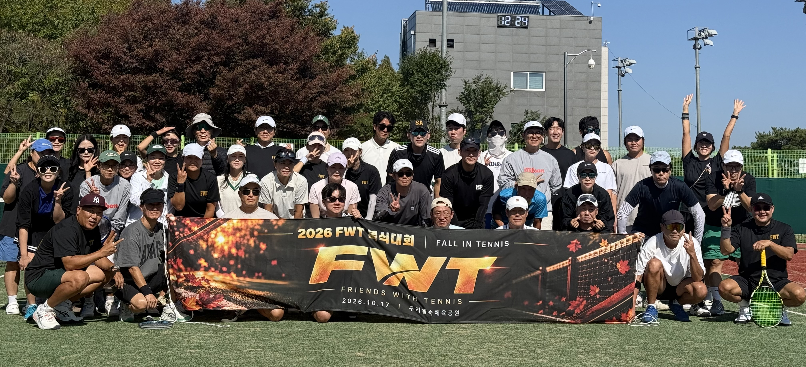

YOUR NEXT MATCH STARTS HERE
함께 치는 테니스,
쌓여가는 나의 기록.
FWT 회원이 되어 함께하는 선수들을 만나보세요.
대회는 회원가입 없이도 둘러볼 수 있습니다.

회원 명단 · 프로필 · FWT 입상 이력
FWT와 함께 시작하세요
이메일로 본인 확인 후 가입할 수 있습니다.
이메일의 인증 링크를 눌러 가입을 완료해주세요. 인증 후에는 이메일과 비밀번호로 로그인합니다.
FWT TOURNAMENTS
다음 경기를 만나보세요
월별 대회 일정과 경기 현황, 결과를 확인하세요.
대회 둘러보기 →MY PROFILE
나의 FWT 프로필
내 프로필 수정
내 경기 · 점수 제출
관리자가 기존 참가 기록을 회원 계정과 연결하면 내 경기가 표시됩니다. 경기 중 상태인 경기의 종료 점수를 제출할 수 있으며, 관리자 승인 후 공식 결과가 됩니다.
나의 입상 이력
관리자가 연결한 참가 기록에서 공식 입상 결과를 자동으로 불러옵니다. 이전 대회 기록도 함께 표시됩니다.